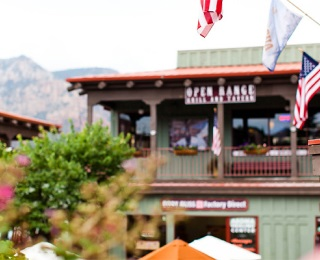

Добро пожаловать в великолепную Седону.

Седона — небольшой городок в Аризоне, Заслуживающий большего!
Рассмотрим 5 причин, по которым Седона круче, чем гранд каньон!
Преимущества Седоны.
Настоящий городок
— №1 —
Седона не аттракцион для туристов, там течёт своя жизнь
 Жилье
Рекомендуем пожить в настоящем мотеле, всё как в кино!
Еда
Всегда заказывайте фирменный бургер,
вы не разочаруетесь!Сувениры
Не только китайского,
но и местного производства!
Там есть мост дьявола
— №2 —
Да, по нему можно пройти! Если вы осмелитесь, конечно

Небольшая площадь
— №3 —
Все интересные места находятся очень близко
Красивая дорога
— №4 —
Ехать в Седону из Лас-Вегаса совсем
не скучно!Мало туристов
— №5 —
Большинство едет в гранд каньон и толпится там
Заинтересовались?
Укажите предполагаемые даты поездки,
и мы покажем вам лучшие предложения гостиниц в Cедоне